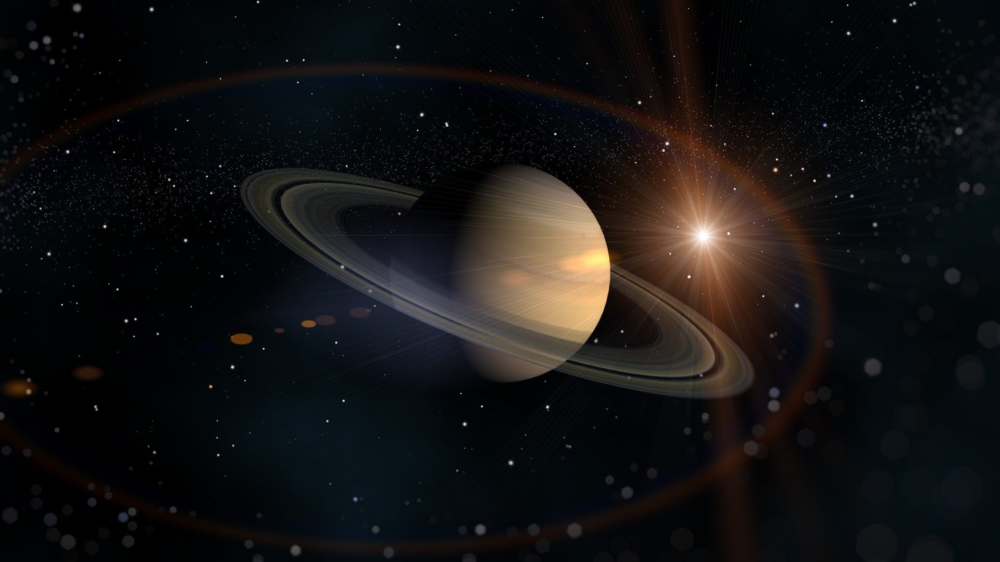

SATURN土星

土星(Saturn)是從太陽算起的第六顆行星，也是一個幾乎和木星一樣大的氣體巨星，赤道直徑約120500公里約為地球的九倍，體積約地球的八百倍。土星與木星一樣都是由氫及氦組成，但密度則只有水的百分之七十，假設把土星放入水中，土星會浮在水面上。土星的公轉周期約為二十九年半，自轉周期為十小時又十四分鐘，由於自轉速度很快，因此赤道附近的離心力很大，使得土星的形狀變成扁圓形。土星的雲層平均溫度為零下125度攝氏。
要求任何人去辨識一疊未標示的天文圖片，土星也許是最易被正確辨識的天體。長期以來，土星的美麗的光環系即吸引觀星者的目光，光環的主要組成物質為小冰塊、塵埃與小石塊，土星光環至少由五道同心環所組成，比較明顯的部分總寘度達六萬公里，而厚度則少於數公里。
土星是目前己知衛星最多的大行星，總數多達23顆， 其中17顆有詳細的觀測數據。
土星的密度為0.7公克/立方公分，而水的密度為1公克/立方公分，亦即如你能找到一個夠大的水盆來裝土星，土星將漂浮在水面上。
Back to home...